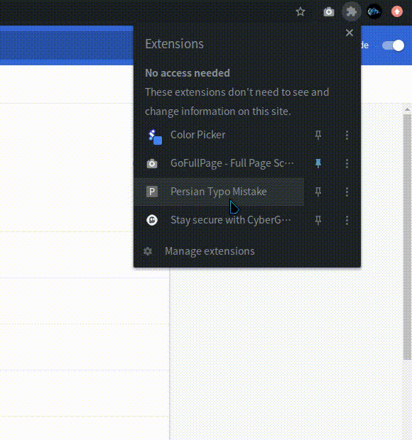

مشکل تایپ متن فارسی
Persian Typing Mistake Extension
واسه خیلیامون پیش اومده که موقع تایپ کردن یادمون رفته زبان کیبوردمون رو عوض کنیم و وقتی تایپ کردنمون تموم شده
دیدیم اشتباه شده و معمولا پاک کردن و از اول نوشتنش رو مخ هممون هست.
We've all been there - you start typing and forget to switch your keyboard language. By the time you finish typing, you realize everything is wrong and usually end up deleting everything and starting over, which is frustrating for everyone.
برای حل این مشکل میتونید با این افزونه متن رو به فارسی تبدیل کنید.
این اکستنشن قابلیت اینو داره که متن انگلیسیای رو هم که با کیبورد فارسی نوشته شده رو بازیابی کنه.
To solve this problem, you can use this extension to convert text to Persian.
This extension has the ability to recover English text that was typed with a Persian keyboard as well.
دمویی از افزونه
Extension Demo

پست معرفی افزونه در لینکدین و پرسش و پاسخ درمورد افزونه
LinkedIn Post Introducing the Extension and Q&A About the Extension